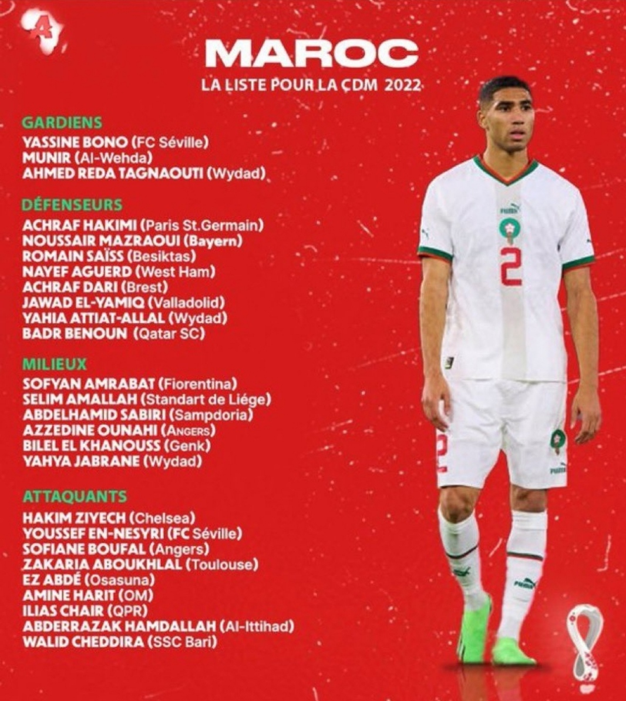
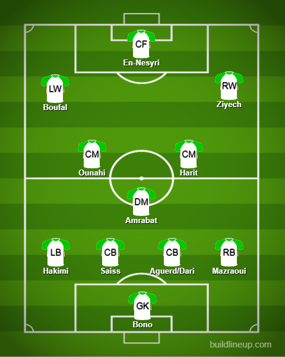

Squad Reaction - Morocco

The order is: Goalkeepers, Defenders, Midfielders, Attackers
This is an okay team in my opinion. With the likes of Belgium and Croatia, it is an uphill battle for Morocco. Ziyech is selected despite playing fewer games and being out of form for Chelsea but I get the reasoning. You sometimes have to have your most talented players.
In goal, we have Bono who is a half-decent keeper for Sevilla and is no slouch. In defense, the fullbacks are sorted with Hakimi and Mazraoui on the left and right respectively. I hope Hakimi can train to be an inverted fullback even more because both he and Mazraoui are young and really good talents. In the middle, you have captain Saiss and the second CB is between Dari and Aguerd. In midfield, Amrabat is ever present at CDM and a combo of Ounahi and Harit is interesting to see(Harit - OTW). In attack, Ziyech is set at RW and up front, En-Nesyri is a good option and Boufal is a constant presence at LW. Ez Abde is an interesting one because although he is OTW, he is injured currently and I have no news on when he’ll be back but if he does get fit during the cup, we can hopefully see him in some games.
The probable lineup:
